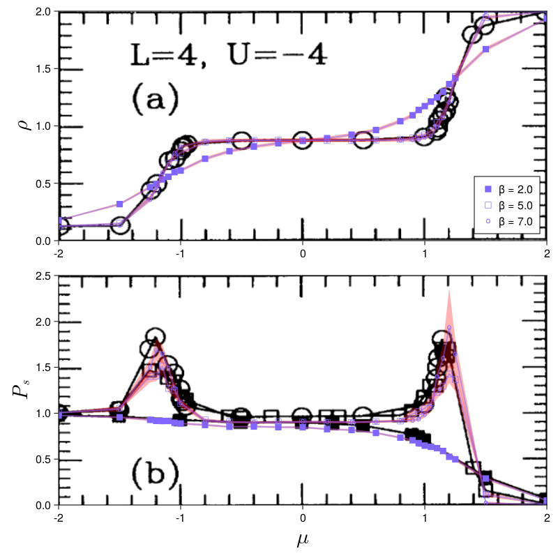
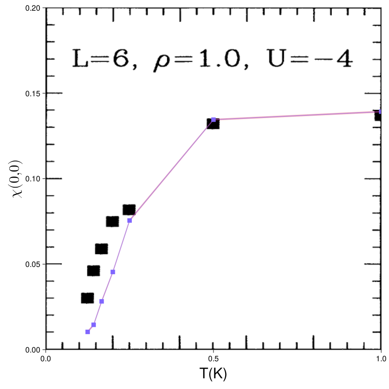

Triangular Attractive Hubbard
This example implements the model from the paper Attractive Hubbard model on a triangular lattice. This also serves as a cross-check for the DQMC and a few measurements, such as pairing correlations and occupations.
The summarized code for this example can be found under "MonteCarlo/docs/src/examples".
Simulation
In the paper simulations were done with a rather low $500-1000$ sweeps and $\Delta\tau = 0.125$. Occupations are measured the same way as in MonteCarlo.jl. Pairing correlations seem to use $\Delta \Delta^\dagger$ rather than the $\Delta^\dagger \Delta + \Delta \Delta^\dagger$ given in the paper. The latter is the default in MonteCarlo.jl. To get the former we need to explicitly pass kernel = MonteCarlo.pc_kernel to the relevant measurement constructor.
The first figure is done with interaction strength $U = -4$, linear system size $L = 4$ at $\beta = 2, 5, 7$ for varying $\mu$. The following simulations should take about 2 minutes. Note that at this number of sweeps you may still see some spikes in the data.
using MonteCarlo
betas = (2.0, 5.0, 7.0)
mus = vcat(-2.0, -1.5, -1.25:0.05:-1.0, -0.8:0.2:0.8, 0.9:0.05:1.25, 1.5, 2.0)
l = TriangularLattice(4)
dqmcs = []
counter = 0
N = length(mus) * length(betas)
@time for beta in betas, mu in mus
counter += 1
print("\r[", lpad("$counter", 2), "/$N] ")
# Setup Simulation
# Note that the pairing correlation formula used the paper is not the
# one MonteCarlo.jl uses by default, so we switch to the correct
# version via `kernel = MonteCarlo.pc_kernel`
m = HubbardModel(l = l, t = 1.0, U = 4.0, mu = mu)
dqmc = DQMC(
m, beta = beta, delta_tau = 0.125, safe_mult = 8,
thermalization = 1000, sweeps = 1000, measure_rate = 1,
recorder = Discarder()
)
dqmc[:occ] = occupation(dqmc, m)
dqmc[:PC] = pairing_correlation(dqmc, m, kernel = MonteCarlo.pc_kernel)
# Thermalize & measure
run!(dqmc, verbose = false)
# for simplicity we just keep the whole simulation around
push!(dqmcs, dqmc)
endProcessing Data
After running all the simulations we need to do a bit of post-processing on the measured data.
# Extract points for plots
N = length(mus)
occs = []
Δoccs = []
pcs = []
Δpcs = []
for i in 0:length(betas)-1
# MonteCarlo.jl records occupations for each site in a LogBinner from
# BinningAnalysis.jl. The paper plots the average per site occupation.
# This iterates through the simulations, picks the occupation
# measurement, calculates first the Monte Carlo average or standard
# error and second the site average. The factor then maps 0..1
# occupations to 0..2 occupations. (spin up + spin down)
_occs = [2 * mean(mean(dqmcs[N*i + j][:occ])) for j in 1:N]
doccs = [2 * mean(std_error(dqmcs[N*i + j][:occ])) for j in 1:N]
push!(occs, _occs)
push!(Δoccs, doccs)
# For Pairing correlations the MonteCarlo representation is more
# complicated. For pairing correlations we consider 4 sites:
# (trg1, b1) ---- (src1, b1) ----- (src2, b2) ---- (trg2, b2)
# dir1 dir12 dir2
# where b is a basis index, src and trg are Bravais site indices and
# dir is a Bravauis direction between them. This is represented in
# MonteCarlo.jl by EachLocalQuadByDistance. The output of the
# measurement takes the form of a 5D tensor:
# PC[dir12, dir1, dir2, b1, b2]
# To get the local s-wave pairing correlation used in the paper, we
# want dir1 = dir2 = 1. Since the triangular lattice has only one site
# per unit cell b1 = b2 = 1. And finally the paper considers the q = 0
# pairing correlation, which is given by summing over dir12.
_pcs = [sum(mean(dqmcs[N*i + j][:PC])[:, 1, 1, 1, 1]) for j in 1:N]
dpcs = [sum(std_error(dqmcs[N*i + j][:PC])[:, 1, 1, 1, 1]) for j in 1:N]
push!(pcs, _pcs)
push!(Δpcs, dpcs)
endPlotting
With the data in a processed form we can now plot it. To make comparison easier, we plot our data directly over figure 1 from our reference.
using CairoMakie, FileIO, Colors, LaTeXStrings
# Create layout
fig = Figure(resolution = (800, 800))
top = Axis(fig[1, 1], ylabel = L"\rho", ylabelsize = 30)
bot = Axis(fig[2, 1], xlabel = L"\mu", ylabel = L"P_s", xlabelsize = 30, ylabelsize = 30)
# Load and plot reference image from paper as the background
p = pkgdir(MonteCarlo)
top_ref = FileIO.load(joinpath(p, "docs/src/examples/assets/triangular/tri_Hub_ref1_1.png"))
bot_ref = FileIO.load(joinpath(p, "docs/src/examples/assets/triangular/tri_Hub_ref1_2.png"))
ip = image!(top, -2..2, 0..2, top_ref'[:, end:-1:1])
translate!(ip, 0, 0, -1)
ip = image!(bot, -2..2, 0..2.5, bot_ref'[:, end:-1:1], transparency=true)
translate!(ip, 0, 0, -1)
# Plot our occupations
c = HSV(250, 0.6, 1)
markers = ('■', '□', 'o')
scatter_plots = []
for (i, (ys, dys)) in enumerate(zip(occs, Δoccs))
band!(top, mus, ys .- dys, ys .+ dys, color = (:red, 0.3))
lines!(top, mus, ys, color = (c, 0.5), linewidth=2)
s = scatter!(top, mus, ys, color = c, marker = markers[i])
push!(scatter_plots, s)
end
# Add legend for scatter plots
labels = map(beta -> "β = $beta", collect(betas))
axislegend(top, scatter_plots, labels, position = :rb)
# Plot pairing correlations
for (i, (ys, dys)) in enumerate(zip(pcs, Δpcs))
band!(bot, mus, ys .- dys, ys .+ dys, color = (:red, 0.3), transparency=true)
lines!(bot, mus, ys, color = (c, 0.5), linewidth=2)
scatter!(bot, mus, ys, color = c, marker = ('■', '□', 'o')[i])
end
# match limits to paper
xlims!(top, -2 , 2)
ylims!(top, 0 , 2)
xlims!(bot, -2 , 2)
ylims!(bot, 0 , 2.5)
# show the plot
fig
Other runs
The paper has two more versions of the above plot for system sizes $L = 6$ and $L = 8$. These show significantly different results.
For $L = 6$ we use mus = vcat(-2.0:0.25:-0.25, -0.1:0.1:1.1, 1.25, 1.5, 2.0) with the same parameters other than that. The simulation should take about 5 minutes.
For $L=8$ we use mus = vcat(-2.0:0.5:-0.5, -0.1:0.1:1.1, 1.25, 1.5, 2.0) and betas = (2.0, 5.0, 6.0, 7.0). The resulting simulation takes about 30min.

Charge Density Structure Factor
The paper also investigates the charge density structure factor as a function of reciprocal lattice vectors $q$. In general structure factors can be computed from correlations via Fourier transform. For charge density correlations one typically comes across one of two formulas: $\langle n_i n_j \rangle$ and $\langle n_i n_j \rangle - \langle n_i \rangle \langle n_j \rangle$. MonteCarlo.jl defaults to the former, but the paper uses the latter. To switch we again need to change the measurement kernel to MonteCarlo.reduced_cdc_kernel.
With that we can now compare to the paper. As stated in the paper/figure, we set $L = 6, 8$, $\beta = 8$ and $|U| = 4$. The chemical potential should be set to produce a filling of $\rho = 1$, which based on the occupation plots above is at about $µ = 0.6$.
Ls = (6, 8)
mus = (0.6, 0.6) # estimations for ρ = 1
dqmcs = []
counter = 0
@time for (mu, L) in zip(mus, Ls)
counter += 1
print("\r[", lpad("$counter", 2), "/$(length(betas) * length(Ls))]")
lattice = TriangularLattice(L)
m = HubbardModelAttractive(l = lattice, t = 1.0, U = 4.0, mu = mu)
dqmc = DQMC(
m, beta = 8.0, delta_tau = 0.125, safe_mult = 8,
thermalization = 1000, sweeps = 1000, measure_rate = 1,
recorder = Discarder()
)
# MonteCarlo.jl uses <n_i n_j> as the default pairing correlation, the
# paper instead uses <n_i n_j> - <n_i><n_j>. The latter is given by
# MonteCarlo.reduced_cdc_kernel
dqmc[:CDC] = charge_density_correlation(dqmc, m, kernel = MonteCarlo.reduced_cdc_kernel)
run!(dqmc, verbose = false)
# for simplicity we just keep the whole simulation around
push!(dqmcs, dqmc)
endAfter the simulation we compute the fourier transform at various $q$ with
# Fourier transform
ys = map(dqmcs) do dqmc
# reciprocal path traced in paper
L = size(lattice(dqmc))[1]
N = div(L, 2)
qs = vcat(
range(Float64[0, 0], Float64[pi, 0], length = N+1),
range(Float64[pi, 0], Float64[pi, pi], length = N+1)[2:end],
range(Float64[pi, pi], Float64[0, 0], length = N+1)[2:end]
)
values = mean(dqmc[:CDC])
dirs = directions(lattice(dqmc), dqmc[:CDC].lattice_iterator)
map(qs) do q
2 * real(sum(cis(dot(q, v)) * o for (v, o) in zip(dirs, values)))
end
end
Magnetic Susceptibility
The uniform susceptibility featured in figure 7 of the paper can be reproduced more easily. For it we need to run our simulation with a spin_density_susceptibility(dqmc, model, :z) measurement. The result will again be in a partially summed per-distance-vector form. The $q=0$ Fourier transform follows from simple summation. With L = 6 and betas = [1.0, 2.0, 4.0, 5.0, 6.0, 7.0, 8.0] this simulation should take about a minute.
